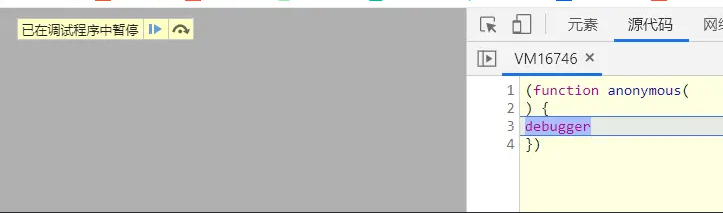

如何禁用F12浏览器开发者工具
当不想让自己的前端代码被用户调试时，需要使用户无法打开或使用浏览器的开发者工具。
使用如下JS脚本后，用户打开浏览器开发者工具时，将无限debugger，从而实现禁用效果。

<script> setInterval(function () { check() }, 2000) var check = function () { function doCheck(a) { if (('' + a / a)['length'] !== 1 || a % 20 === 0) { ;(function () {})['constructor']('debugger')() } else { ;(function () {})['constructor']('debugger')() } doCheck(++a) } try { doCheck(0) } catch (err) {} } check() </script>